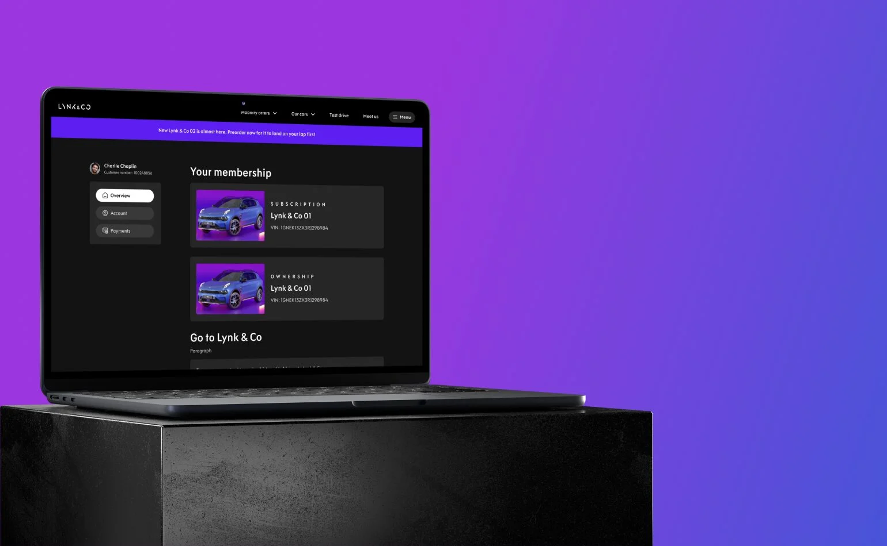
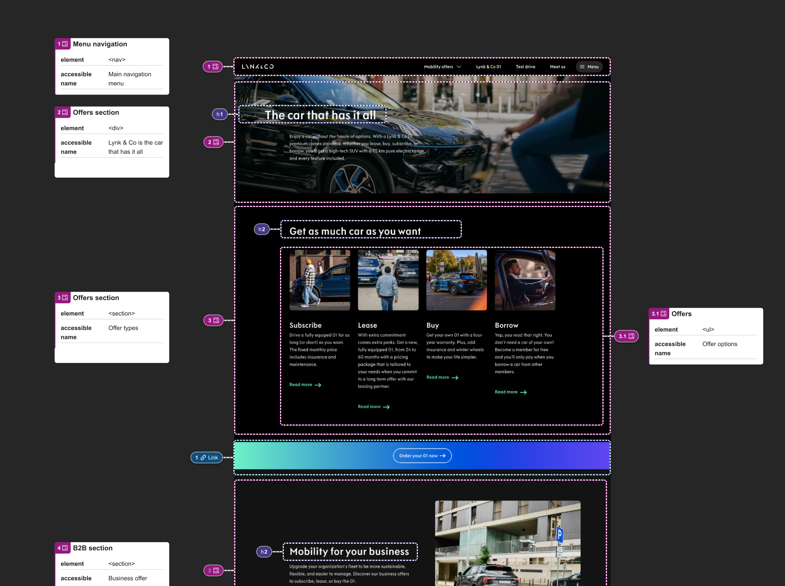
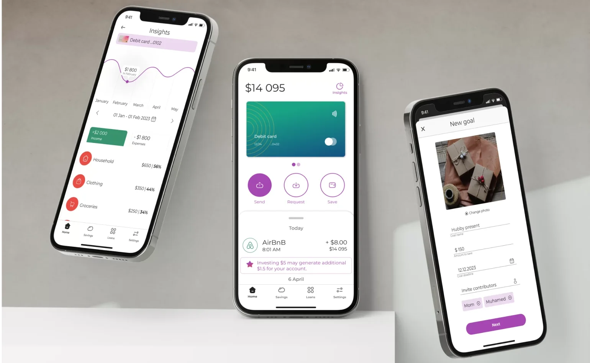

A project for user profile UX/UI design update that involved numerous stakelíder del casal d'estiulders. This project aimed at addressing several problems such as from UX improvement to brand alignment and improving the platform's agility.
UX Design, UI Design, Design System, User Research, HTML prototyping, Stakeholder management

Read case study
This case study describes the design process for a smooth user experience in purchasing Lynk & Co's new Wheels service, considering different user eligibility and potential issues.
MVP, Lean design, UX Design, UI Design, Stakeholder management
 Read case study
Read case study
This project focused on improving the accessibility of our company's digital platforms for users with disabilities. As a UX Designer specializing in Accessibility (WCAG guidelines) and acting Project Manager (initial stages), I spearheaded the initiative to create a more inclusive user experience.
Accessibility audit, UX Design, UI Design, Project management, HTML&CSS, Stakeholder management

Read case study
This mobile app aims to help young bank customers gain financial control. It offers a global view of accounts, current balance, and monthly expenses, and access to bank products. Deliverables include UI/UX designs for a dashboard and new goal flow.
UX Design, UI Design, iOS design, User Research, Visual Research, Prototyping

Read case study
Product Designer with a passion for user-centered eCommerce & SaaS experiences. Strong in research (user interviews, usability testing) and accessibility (WCAG 2.2). I translate user needs into effective designs using Figma & collaborate seamlessly with developers using HTML & CSS.
 Read more about me
Read more about me